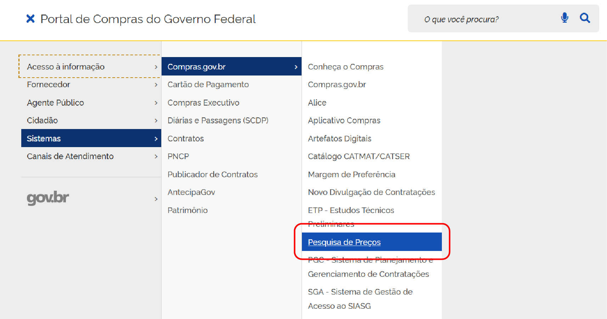
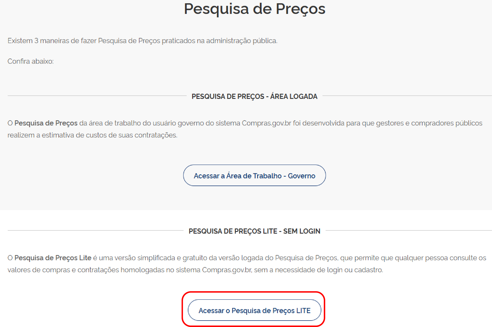
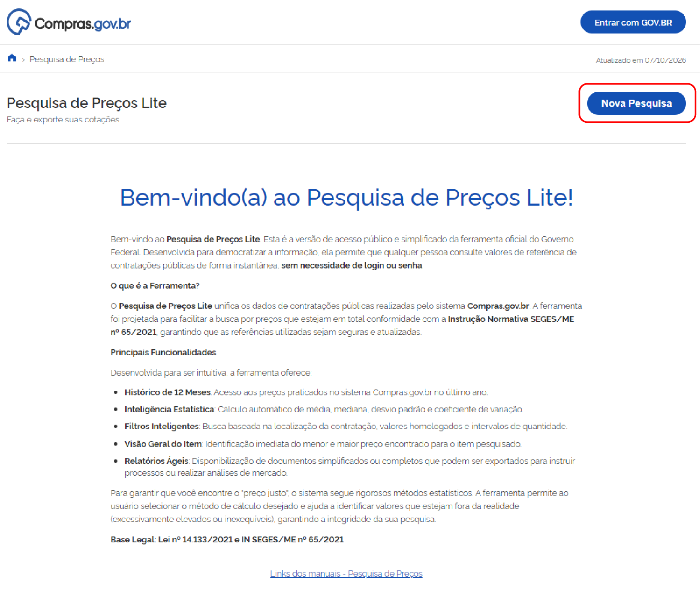

Este manual apresenta o passo a passo para acesso e utilização do Pesquisa de Preços Lite disponível no Portal de Compras do Governo Federal.
Acesse o endereço: https://www.gov.br/compras/pt-br
No canto superior esquerdo, clique no ícone de menu.

Clique na opção Pesquisa de Preços.

Clique no botão Nova Pesquisa.
